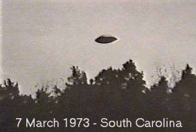

Un groupe de environ 12 personnes observe pendant 2 h, 40 objets circulaires brillamment éclairés
au-dessus de Saylor's Lake (Pennsylvanie).
Début du moisPrès
de Piennes (Meurthe-et-Moselle) 60 t de ferraille, composées de rails de chemins de fer,
et 7 aiguillages disparaissent d'un chantier.
Une caravelle est prête à atterir sur l'aéroport
de Madère quand les passagers qui l'attendent la voient soudainement
virer dans le ciel, tandis que le pilote établissait son dernier
contact avec la tour de contrôle. Puis, plus rien. 2 remorqueurs envoyés sur les lieux — pourtant bien établis —
ne trouveront aucune trace.
Observation du 7 en Caroline du Sud

En Caroline du Sud (USA), observation (ci-contre).
A Saint-Jean-de-Bournay (France) , 2 témoins voient
pendant 15 mn 1 boule de feu terriblement éblouissante, détournant le le regard à plusieurs reprises. Sur les lieux
de l'observation le sol est littéralement carbonisé "Une section de recherche sur les ovnis à Saint-Marcellin", Le Dauphiné Libéré, 20 mai 1974.
Jeudi A Grand Tower (Illinois), 2 employés de la centrale
électrique observent un ovni la survoler Klinn, Robert B. & Branch, David: Article dans le Register de Santa Ana (Californie), 28 mars 1973.
L'armée dément le survol par des jets "USAF Denies Chase By Jets", The Register of Santa Ana (Californie), 28 mars 1973.